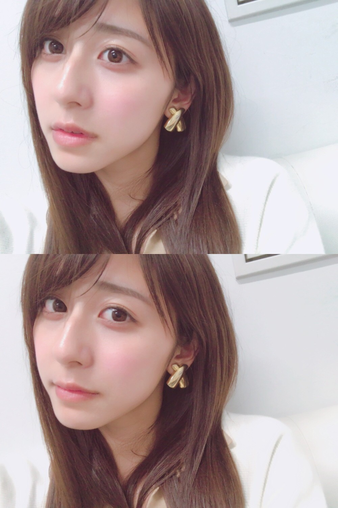
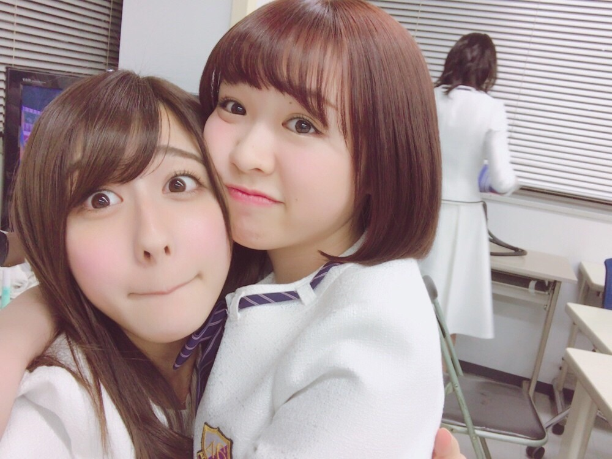

| 2017/04 12 Wed | 本格的に |
ちはるーむへようこそ
今日のちはるーむではみんなでナンジャモンジャをしました。
今日は世界宇宙飛行の日。
パンの記念日。
1961年、世界初の有人宇宙衛星が打ち上げに成功した日です。
かの有名なガガーリンの「地球は青かった」という言葉もこの時のものです
技術は進歩するんだなあ
最初は軍事携帯食糧として作られた乾パンが日本で初めて焼かれたパンだそうです。
1842年の天保13年に作られたんだって
大好きなパン！！！
みなみも大好きなパン！！！

いよいよ学校が本格的に始まりました
就活中の、スーツを着た4年の先輩方を見ていると
ああ私も3年生になったんだなって
実感します。
入学から考えるとあっという間！
大学生活もう折り返し地点。
早すぎるよ〜
履修も組んでいる真っ最中。
履修登録はいつも迷います
何が良いかな〜何が楽しそうかな〜って
でも３年生の授業、面白そうなのが沢山あって嬉しい◎
興味のある事を学ぶ事が一番楽しい！
知らない事を知れるのが好きです。


膝にみりあを乗せたよ〜
そして私は何故か変顔だよ〜
眉毛ハの字すぎる
そんなお膝に乗るみりあがセンターの
17thアンダーライブ、
今日から一般販売が始まっています！！
東京体育館にて
4月20日、21日、22日で4公演。
急な告知だったので予定を合わせるのが
大変という方もいらっしゃるのは
重々承知しておりますが...
是非皆さん見に来てくださると幸いです☺︎
ただいまメンバー絶賛準備中です。
お待ちしています！！
------------------------------------------------♡
♬ ChihaMusic
「サザンクロス」BUMP OF CHICKENさん
少し切なくて悲しくて寂しくて
だけどどこか懐かしくて馴染み深くて
ロマンティックで美しくて
ずっと聞いていたい曲。
さすがBUMPさんだな〜
"星を読んで位置を知るように
君の声で僕は進めるんだ"
ってところが好き！
私BUMPさんの世界観というか
表現の仕方や気持ちの表し方が好きなの。
美しい。
最近お花に囲まれた生活をするのが好き。
お花屋さんに立ち寄って
お花をお土産に買って帰ったり
家のお花を眺めたりするのが
今私のリラックスタイムになってる！
少し前まで桜の枝を飾っていたの
素敵だったな〜
今はマーガレットを花瓶に挿してるよ◎
おやすみ
斎藤ちはる
コメント(240)
2017/04/12 23:55